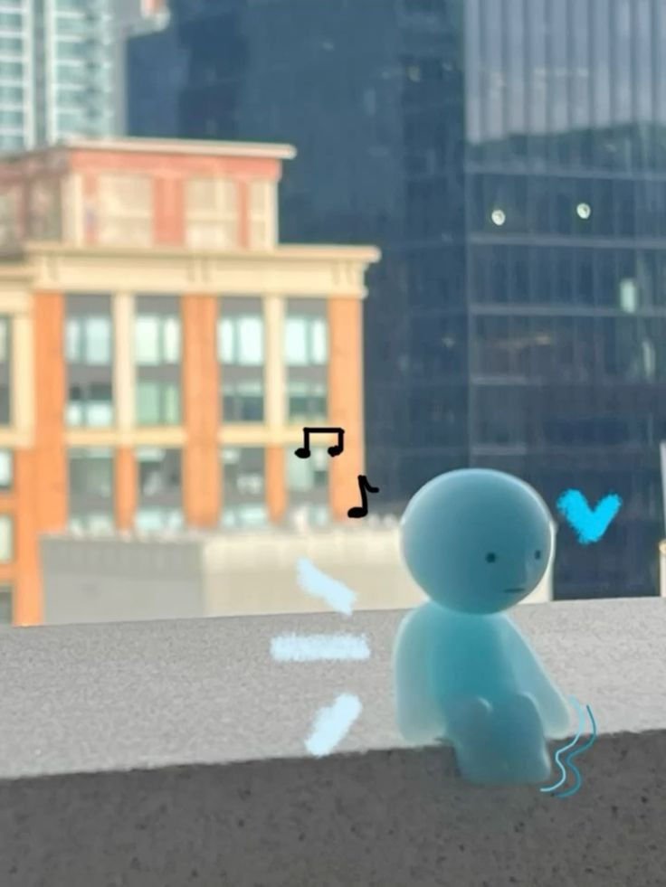
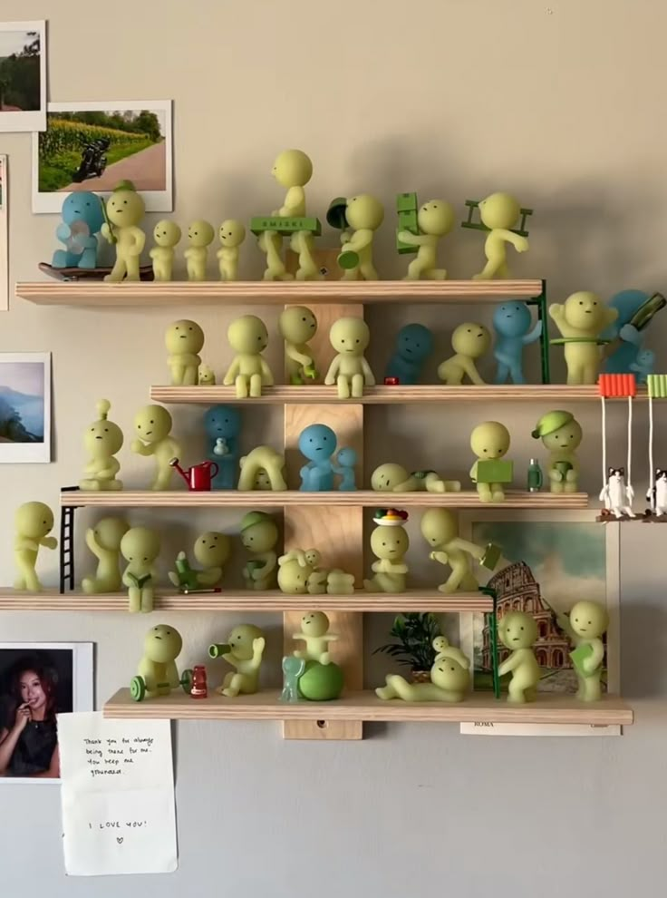
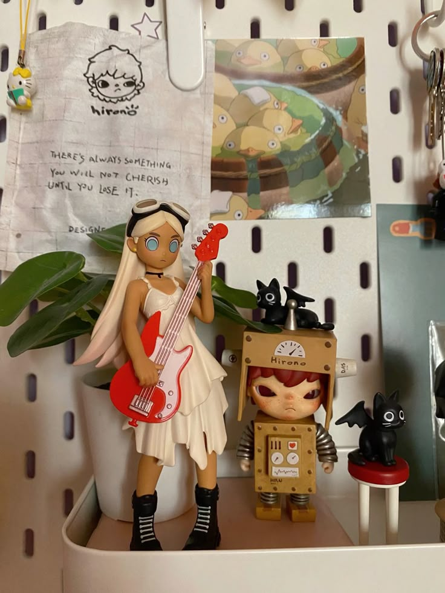

A Look into How One Collector's Passion Began and Grew
 This spring, we spoke with Vick, an avid Smiski enthusiast whose modest curiosity quickly turned into a full-blown obsession. It all began when they spotted a friend’s glowing green figure perched on a bookshelf and was instantly captivated by its simple charm. Before long, Vick was hunting down every single one they could find. We will be showing the story of their journey on how they became a collector when they were younger and more specifically her growing collection of the popular series Smiskis.
Their collection started around Fall 2023 . With how popular the Smiski collection had been during the time, many more people began to purchase and collect them themselves, including vick’s friends. Seeing how cute they were, they decided to try one out for themselves. Excited and thrilled to open their first own smiski blind box, they were surprised to not get a typical green one like everyone else, but instead a blue one. It wasn’t an error, there were a couple blue smiskis part of the collection as well. However, still wanting to get the original green smiskis, they decided to purchase another. Successfully they obtained what they wanted, satisfied and happy, they couldn't help but be interested in obtaining more. One led to two, two led to five and eventually they found themselves with more than 30 smiskis in their collection!
Every figure carries its own vibe. “Sleepy Head,” with those droopy eyelids and pint-sized pillow, immediately claimed the corner of Vick’s nightstand—perfect company during late-night study sessions. “Night Walker” slipped into the shadows of their bookshelf, its translucent glow making it look like it might tiptoe off the shelf under cover of darkness. And “Peek-a-Boo,” leaning forward with wide-eyed curiosity, became a running joke whenever friends visited: “Watch out, it’s spying on you!” It’s wild how so much personality can live in a three-inch slab of vinyl.
 Of course, Smiskis didn’t stay solo for long. Soon, Vick’s friends were introducing them to other blind-box lines. Enter the cherubic Sonny Angels—little dolls sporting everything from floppy bunny ears to glittery birthday crowns. Then came Peach Riot. Tiny vinyl rebels in leather jackets and denim boots, perfect for perching atop a keyboard. It felt like curating a mini art show right on their desk. Inspired by all these new arrivals, Vick became a full-blown DIY aficionado, decking out her main display shelf and sprinkling figures all around her room. She upcycled old shoeboxes into mossy forest hideouts tucked on the bookshelf and gritty urban alley scenes on her desk. On the floor near her nightstand, she hand-knit microscopic scarves for the Smiskis and set out polymer-clay coffee mugs for the Sonny Angels. For the rarest pieces, she even 3D-printed custom stands that now perch atop her dresser, her windows, everywhere she could.
The social side of blind-box collecting surprised Vick the most. A local hobby shop hosts monthly “blind box nights,” where collectors swap duplicates, compare chase variants, and compete in unboxing challenges. Vick once traded two extra Night Walkers for a coveted silver “Starlight Smiski,” and in the process met a handful of fellow collectors who still trade tips on Twitter restock alerts. Online, they joined a Discord server buzzing with enthusiasts posting restock times, sharing eBay finds, and geeking out over custom paint jobs and aftermarket display cases. There have been epic wins and hilarious near-misses. Vick remembers the holiday pop-up hunt that felt more intense than a concert ticket drop: calling every store in the mall, lining up before dawn, and finally snagging that limited-edition Christmas Smiski tucked behind a display. They still boast about that triumph. Of course, there’ve been cracked boxes, accidental duplicates, and the dreaded “shipping delay” that left a box in limbo for weeks—but those moments just add to the thrill. Every “next restock” feels like gearing up for another mini-adventure.
As their haul crept past fifty figures, Vick realized their plain old bookshelf wouldn’t cut it. Now they’re building a custom display unit with built-in LED backlighting, interchangeable scene panels, and even a motorized “figure of the week” turntable so each prized buddy gets its moment in the spotlight. They’re sourcing reclaimed wood for a vintage vibe and wiring tiny battery packs so everything glows softly at night. It’s part woodworking project, part electrical tinkering, and entirely another layer of fun added to the hobby. Next up, Vick is launching a blog and an Instagram Reels series to share unboxing reactions, diorama tutorials, and collector interviews. They’ve sketched out a content calendar—DIY bookshelf hacks in May, best places to hunt for restocks in June, a guest post from a custom-figure painter in July—and they can’t wait to bring new fans into the fold. Their goal is simple: build a welcoming space where first-time buyers and veteran chasers can swap stories, show off setups, and celebrate those tiny surprises together. Who knows maybe they’ll join Mystery Marvels!
 For Vick, this isn’t just about filling shelves with cute figurines—it’s about creativity, connection, and the pure delight of the blind-box chase. From that first blue Smiski surprise to late-night crafting marathons, each little figure carries a memory: the thrill of unwrapping, the rush of finding a rare piece, the laughs shared with friends over trading duplicates. As they get ready to open the next box—maybe a secret Horizon Smiski or a new Peach Riot rocker—one thing’s for sure: the adventure is far from over, and those pocket-sized pals will keep surprising and inspiring at every turn.